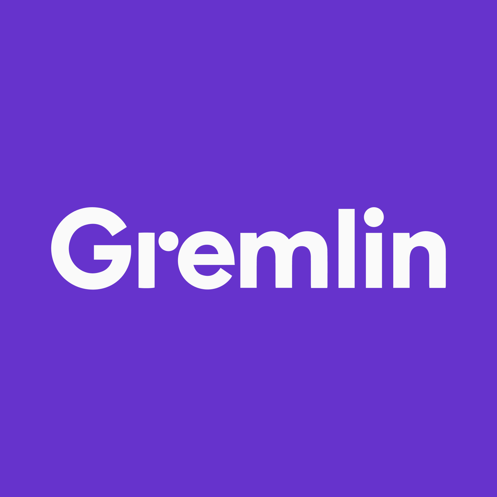
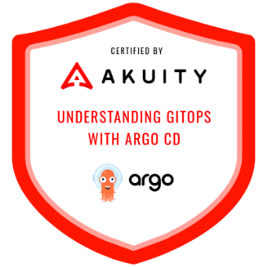

Open to opportunities
Vishal Bagi
Engineering Manager · DevOps Platform & SRE
I build platforms that make other engineers faster — the golden paths, paved roads and self-service tooling that turn infrastructure, CI/CD and testing from things teams fight into things they simply use.
Impact at a glance
-
12
Years in engineering
-
32
Engineers led
-
55%
Infra cost removed
-
30%
Faster deployments
-
99.9%
Platform uptime
About
What I do
Over 12 years I've moved from hands-on automation into platform and developer-experience leadership for large-scale fintech systems, taking organisations from tool-centric DevOps and QA practices to platform-driven engineering enablement.
-
Platform Engineering & IDP
Internal Developer Platforms with golden paths and paved roads — self-service environment provisioning that teams adopt because it's the easiest route, not the mandated one.
-
CI/CD Architecture at Scale
End-to-end pipeline design across Argo Workflows, GitHub Actions, Jenkins, CircleCI and Bitrise, with performance gates wired directly into the path to production.
-
SRE & Observability
Monitoring, alerting and incident triage across CI and pre-production, plus the RCA and post-mortem practice that turns incidents into preventive engineering.
-
Performance & Chaos Engineering
Performance and chaos testing offered as a platform capability — Gatling, JMeter, Chaos Mesh and AWS FIS, available to every product team on demand.
-
Developer Experience
Removing the friction between an engineer and a shipped change: faster feedback loops, continuous inspection, and less technical debt carried forward each quarter.
-
Org Building & Leadership
Growing engineers and the teams around them — hiring, coaching, 1:1s, goal setting, roadmap planning and vendor governance.
Experience
Where I've had impact
-
Engineering Manager — DevOps Platform & SRE
Jun 2024 — Present
Own the platform, DevOps, SRE and developer-experience charter for pre-production and performance ecosystems across multiple product teams; lead a team of 10.
- Built Internal Developer Platform capabilities for performance, reliability, CI/CD and observability, adopted across the engineering organisation.
- Designed self-service, isolated performance environments on Argo Workflows, Terraform and Kubernetes — 55% lower infra cost, with static-environment dependency removed entirely.
- Established golden paths for CI/CD, observability, environment provisioning and performance gates — 30% faster deployments at 99.9%+ reliability.
- Cut performance-environment startup from 4h → 2h15m, and built modular plug-and-play stability modules for Kubernetes, Kafka and Aurora.
- Architected CI/CD-integrated performance gates and an Argo Workflows-based alternative to JumpServer for pre-production access.
- Partner with SRE on production debugging, triage, root cause analysis and post-mortems, and drive technical-debt reduction through continuous inspection and monitoring.
-
Engineering Manager — Quality & Engineering Enablement
Jun 2020 — May 2024
Joined as a contractor during COVID travel restrictions, converted to full-time, then progressed into Engineering Manager. Transformed a QA function into an engineering-enablement and quality-platform team serving every product team.
- Built an in-house automation team of 16 and led 32+ engineers across mobile, web and API testing.
- Drove shift-left and Kaizen process change, reducing testing redundancy for a 25% efficiency gain across multiple projects.
- Architected automation frameworks across web, mobile and API, integrated into each team's CI/CD pipelines.
- Introduced Visual Test, App feedback Cycle, ReportPortal and AWS FIS to extend security and chaos coverage.
- Owned selection, evaluation and governance of testing tools, vendors and SaaS partners.
- Built an internal mini-app on the product SDK (VueJS) used by 200K+ users for transactions.
Show earlier roles (2014 — 2020)
QA Engineer
Feb 2018 — Mar 2020
- Designed Page Object Model and BDD automation frameworks with custom HTML reporting and parallel execution.
- Built end-to-end scenarios driving two mobile applications and a web admin portal simultaneously.
- Created and maintained JMeter performance scenarios — execution, analysis and reporting.
- Integrated the automation framework with Jenkins, GitHub and SVN.
- Mentored three graduate engineers into the testing domain.
Test Analyst
Sept 2017 — Feb 2018
- Automated web and desktop applications for a government tax entity.
- Reduced test flakiness and inconsistent results.
- Executed and evaluated all sanity and regression reports on a daily basis.
Associate Consultant, SSE, SWE
Mar 2014 — Sept 2017
- Progressed from software engineer to automation SME across point-of-sale, web, mobile and interconnected retail systems.
- Led a team of 6 building UI automation frameworks with EggPlant and Sikuli — 70% of the regression suite automated.
- Used Sikuli OCR and image recognition with Python socket programming to drive tests across a multi-node physical lab.
- Contributed to functional and non-functional POCs, RFPs and feasibility studies.
Education Bachelor of Engineering, Electronics and Telecommunication — Goa College of Engineering, 2009–2013.
Toolkit
What I build with
- AWS
- Kubernetes
- Terraform
-
 Argo Workflows
Argo Workflows
-
 GitHub Actions
GitHub Actions
- Jenkins
- CircleCI
- Bitrise
-
 Grafana
Grafana
-
 Prometheus
Prometheus
- Elastic / ELK
- New Relic
- PagerDuty
- Gatling
- JMeter
-
 Selenium
Selenium
- Appium
- Cucumber
- REST Assured
-
 Java
Java
- Python
-
 Scala
Scala
Showing all 22
Credentials
Certifications
-

AWS Certified DevOps Engineer – Professional
-

Gremlin Certified Enterprise Chaos Engineering
-

Continuous Delivery and GitOps using Argo CD
-

Professional Scrum Master™ I (PSM I)
-

AWS Certified Cloud Practitioner
-

Microsoft Certified: Azure Fundamentals
-

Oracle Certified Associate, Java SE Programmer
-
ISTQB Certified Tester, Foundation Level
Contact
Let's talk
Open to engineering leadership roles in platform, DevOps, SRE and developer experience. The quickest way to reach me is the form — or straight to my inbox.
- Availability
- Open to opportunities
- Location
- Gurugram, India
- vishalbagi44@gmail.com
- linkedin.com/in/vishalbagi